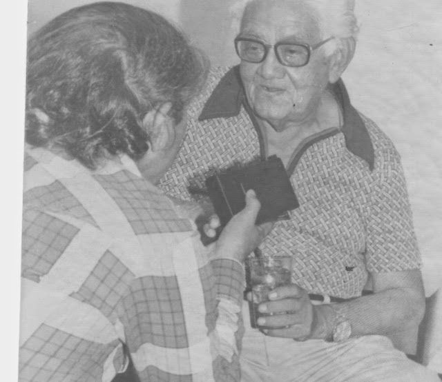
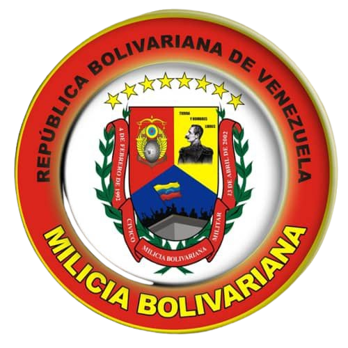
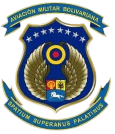
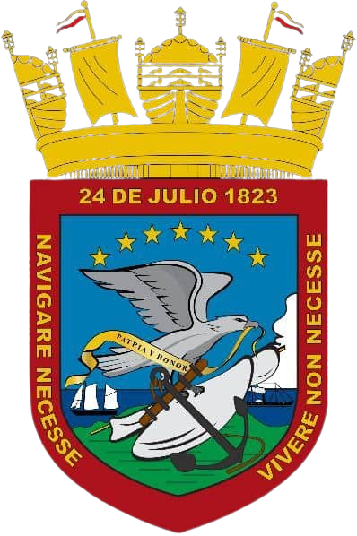
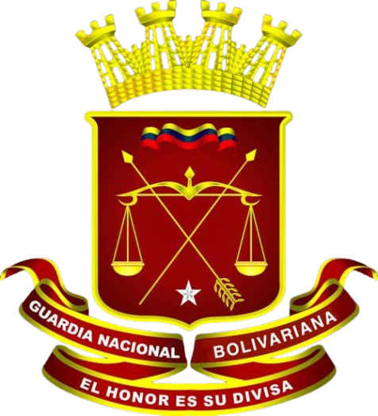
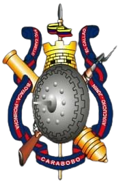

Hospital Militar
Dr. Manuel Siverio Castillo
Dr. Manuel Siverio Castillo
Portal Informativo Oficial del Hospital Militar Dr. Manuel Siverio Castillo, comprometidos con la salud y el bienestar de la Guarnición del estado Bolívar.
Nuestra Historia
El Hospital Militar Dr. Manuel Siverio Castillo, de Puerto Ordaz, responde a los planes de expansión de la red sanitaria de la Fuerza Armada Nacional, contemplados en el plan global 2000-2010, para atender fundamentalmente las necesidades de salud de la Guarnición del estado Bolívar, con red de influencia en los estados Anzoátegui, Monagas, Delta Amacuro y Amazonas, lo que determina una población a atender que asciende aproximadamente a 40 mil personas, representando una importante contribución a la consolidación y desarrollo del eje Orinoco-Apure.
Además de representar una importante contribución al desarrollo de este eje, representa un centro asistencial de emergencia a la población en general; así como para consultas y hospitalizaciones a través del Plan Bolívar 2000, aseguró Humberto José Perozo, director de Sanidad de la Fuerza Armada Nacional.
Se distingue a este hospital con el nombre del Dr. Manuel Siverio Castillo (en la foto), médico-cirujano, egresado de la Universidad Central de Venezuela en 1936, quien ocupó diversos cargos en la administración pública. Se destacó por su abnegado apoyo al personal militar y civil acantonado en esta Guarnición, especialmente al componente de la Guardia Nacional, donde se desempeñó como médico en honor desde 1936 en las poblaciones de El Callao, Upata y Ciudad Bolívar.
El doctor Siverio nació en el barrio Santa Lucía de Ciudad Bolívar el 24 de enero 1906. Médico general, cirujano general, obstetra, radiólogo del Hospital Ruiz y Páez durante 43 años, al cabo de los cuales fue jubilado, pero aun así continuó trabajando por amor a la profesión.
Además de la medicina fue un gran aficionado a la música. Antes que médico fue músico. Sus instrumentos primarios fueron la bandolina, la guitarra, el cuatro y finalmente el violín porque según decía el violín es un instrumento bastante expresivo y el que mejor se acomodaba a su ritmo de vida y sensibilidad artístico-musical.

Nuestra institucion se rige bajo los mas estrictos principios eticos y profesionales.
Proporcionar atencion medica integral, preventiva y especializada de la mas alta calidad al personal militar de la Fuerza Armada Nacional Bolivariana, sus familiares con derecho y la comunidad.
Consolidarnos como el centro de salud militar de referencia nacional de vanguardia, reconocido por la excelencia de nuestros servicios asistenciales y el humanismo de nuestro personal.
★
Honor y Disciplina
♥
Vocacion y Humanismo
✦
Excelencia Medica
❋
Compromiso Social




